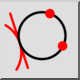

Tiếp tuyến và 2 điểm
Thanh công cụ / Biểu tượng:


Trình đơn: Vẽ > Đường tròn > Tiếp tuyến và 2 điểm
Phím tắt: C, T, 1
Lệnh: circletangent2p | ct1
Thanh công cụ / Biểu tượng:


Vẽ một đường tròn tiếp tuyến với một đối tượng và đi qua hai điểm.